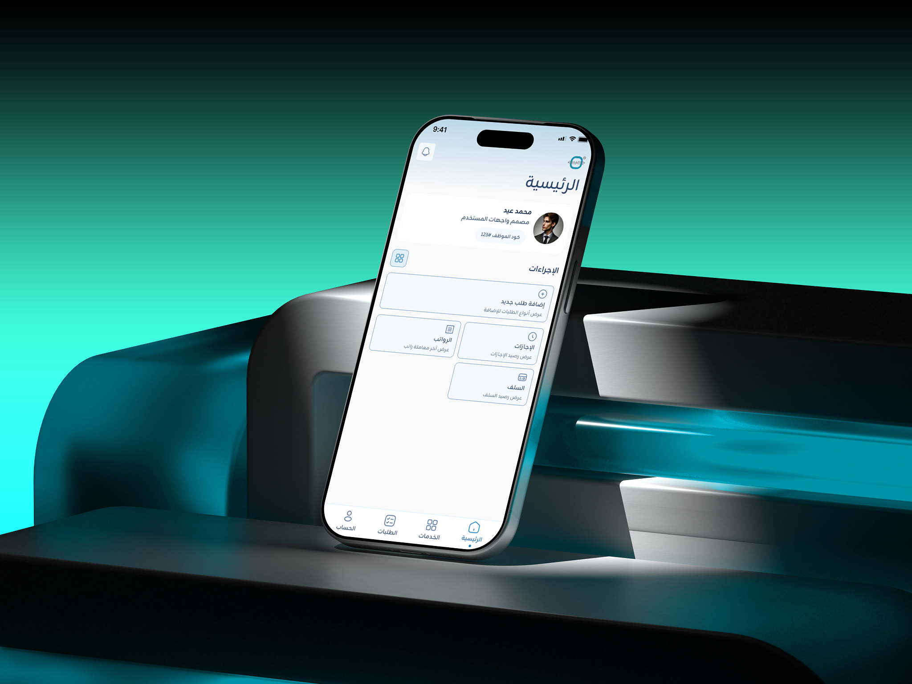
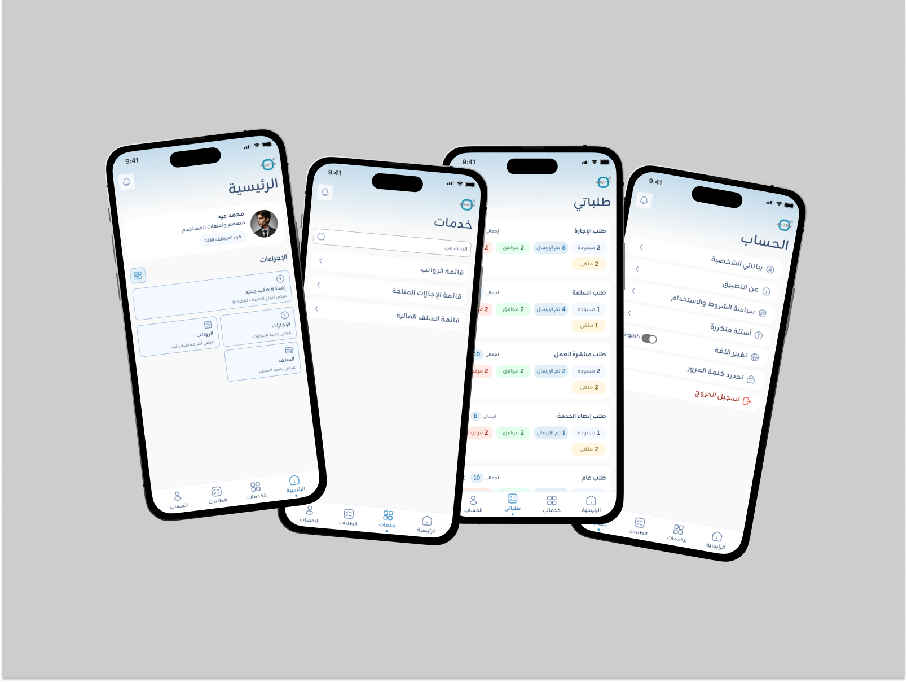

Microtec HRM Mobile App
Role-based companion app with seamless self-service for employees and 1-tap approvals for managers. Engineered for speed, clear visual status hierarchies, and native Arabic RTL excellence.

Project Overview
Microtec HRM Mobile App is a companion app that brings daily HR tasks to mobile for both employees and managers. It syncs with our Web ERP so staff can send requests and managers can approve them on the go.
How do you keep Web and Mobile synced while keeping the app simple for both employees and managers?
By connecting both platforms to a real-time system with a dynamic role-based UI:
- Instant Sync: Every action on mobile updates the Web ERP immediately.
- Tailored Views: Employees get a clean self-service screen, while managers automatically unlock a 1-tap Approval Center.
Core Features
A. Role-Based Navigation
To keep the interface clean and avoid building two separate apps, I designed a dynamic Role-Based UI:
- Employee View: Access to personal services, leave requests, and payroll tracking.
- Manager View: Unlocks a dedicated "Tasks" (المهام) tab on the navigation bar and home screen to review, approve, or reject team requests with one tap.
B. Smart Selection via Bottom Sheet
The Challenge:

The Mobile Solution:


Final Mobile Design & Experience
By keeping data seamlessly synced between web and mobile, I created a consistent experience where requests flow smoothly across devices. Structuring the app with clear role-based views made it obvious which features belong to Managers versus Employees.
Managers Experience


Employees Experience


Key Takeaways
This project was a huge learning experience for me. It helped me work much closer with business teams and stakeholders to make sure our designs actually solved real business needs.
Taking charge of pre-launch testing on the live build also made sure everything looked and worked right before we officially launched.